成果
本篇文章从一个全新的角度来解决Few Shot Segmentation任务。先前的小样本分割模型都是遵循先由support图像中学习特征（prototype），在用prototype(s)来引导query图像分割的范式。然而这种做法将匹配和分割融合到一起，提升了网络的学习难度。
本篇文章的提出了“先分割，后匹配”的范式，首先使用类无关的分割器将query图像分割出多个先验掩码（mask proposals）。之后由support图像引导的进行掩码匹配，将相关的掩码合并得到最终结果。
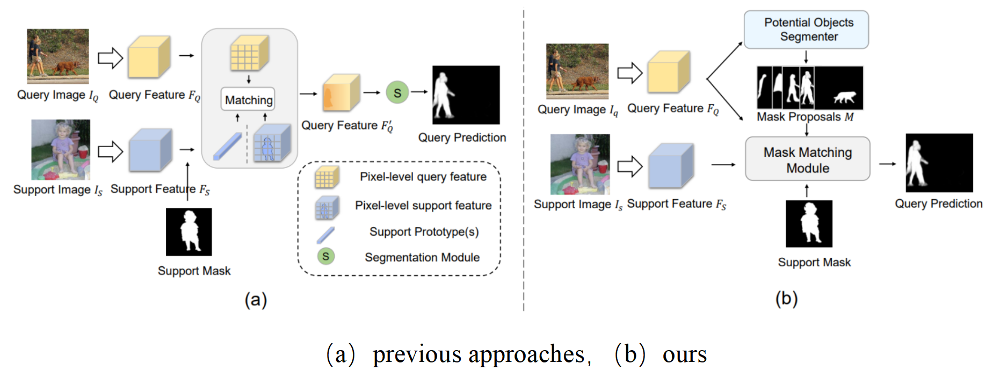
优势：（1）MM-Former遵循“先分割，后匹配”的范式，可为query图像生成高质量的掩码。（2）prototype(s)仅需引导同类别掩码的匹配，而非像素级分割，很大程度降低了网络的学习难度。
基于匹配和分割解耦的设计，降低了网络的学习难度，因此相比先前的SOTA方法CyCTR和HSNet，很大程度上减小了训练时间和训练内存消耗。
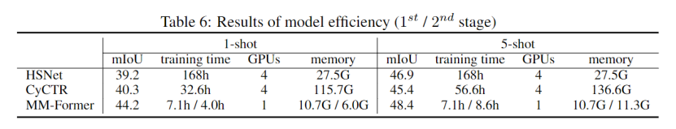
文章主要的贡献
（1）提出了新的Few Shot Segmentation任务的范式
（2）提出了两阶段小样本分割框架MM-Former，可以有效地将support样本与一组先验掩码进行匹配来获得分割结果。
（3）在COCO和PASCAL上取得了SOTA的结果
论文中的模型结构如下：
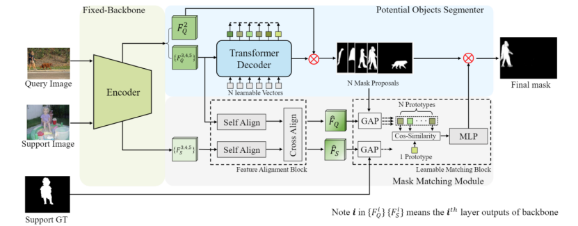
这篇文章遵循Mask2Former的设定，采用标准的Transformer结构，将backbone经过MSDeformAttn后的特征与N个可学习向量进行cross attention。由N个向量引导先验掩码产生。这种先验掩码和目标检测、零样本分割任务中的先验框类似，具有很强的泛化性，可对训练集未出现过的类别（novel class）产生准确分割。
这里需要注意的一点是，先验掩码的产生并不涉及support和query之间的特征交互，仅由query图像通过backbone+ Potential Objects Segmenter（POS）模块产生。
这一模块将support样本提取出的prototype和query样本通过先验掩码提取出的N个prototypes进行匹配，来确定最终的分割结果。这种匹配仅在prototype之间进行，不需要考虑像素级的分割，因此相比于先前模型将匹配和分割融合的做法，很大程度上降低了网络学习的难度。
Feature Alignment Block： 将support样本和query样本由backbone提取出的特征进行对齐。分为特征自对齐（Self Alignment）和特征互对齐（Cross Alignment）两部分，如下图所示。Self Alignment在channel维度平滑了特征，强调了重要的通道，抑制了不重要的通道。Cross Alignment使support和query的同类特征趋于一致。
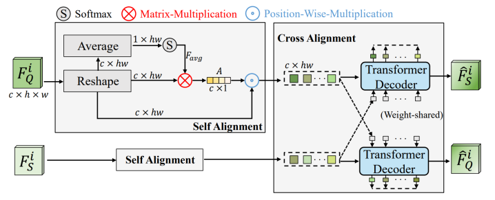
Learnable Matching Block: 通过mask global pooling的方式分别得到support的prototype和query的N个prototypes，并计算二者之间的余弦相似度，在经过MLP层预测得到最终匹配结果。
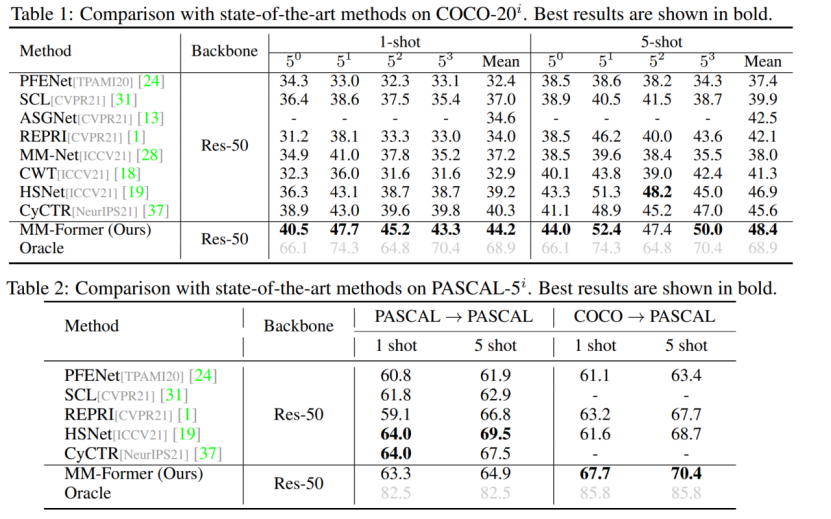
其中Oracle结果为生成N个先验掩码后直接使用groundtruth选择一个IoU最高的掩码作为分割结果。Oracle和最终结果之间的差距（~20mIoU）表明MM-Former还有很大的潜在提升空间。
（a）对Mask Matching Module各模块进行消融，（b）对特征对齐模块FAB的插入位置进行消融，（c）对两阶段的训练策略进行消融
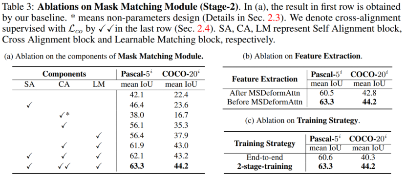
（a）对POS的分类器进行消融，（b）对先验掩码数量进行消融。
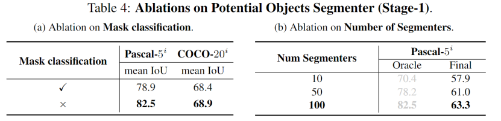
MM-Former在使用COCO训练时表现出很好的迁移性能，但在使用PASCAL训练中表现相对较差。这篇文章对此现象进行了深入研究
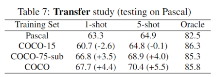
这篇文章使用COCO数据集中的15个PASCAL训练类别的所有训练样本来训练MM-Former。在这种情况下，训练样本大约为PASCAL训练集的9倍（COCO-15）。当训练类别数量有限时，更多的培训数据并不会提升性能（60.7mIoU vs 63.3 mIoU）
这篇文章从COCO数据集中的75个类别（不包括测试类别）随机抽取和PASCAL数据集相同数量的训练图像（大约6000张），来训练MM-Former（COCO-75）。当使用同等数据量进行训练时，更多的类别会带来更好的匹配性能（66.8mIoU vs 63.3mIoU）。
总之，训练类别的数量决定了匹配模块的性能。这一发现符合Few Shot任务和Meta Learning的动机。当训练类别的数量有限时，会影响匹配模块的性能。
增量学习在图像分类任务中已经得到了广泛研究，并在缓解灾难性遗忘的问题上取得了一些成果。但在类增量语义分割这一任务上，由于背景类的语义转移（semantic shift of the background class, 即模型在过去学到的一些概念被分配到当前训练中的背景类中的情况）存在，类增量语义分割任务仍然具有挑战。
本文为解决背景类的语义转移问题，提出了一种名为MicroSeg的新颖而有效的方法，该工作基于“在背景中具有显著对象性的区域很可能属于过去或者未来的概念”的思想，通过生成类别无关的先验掩膜(mask proposals, 下同)来挖掘这些区域，并在优化阶段对它们进行聚类与分配新的标签，以进行更好地训练。相对于之前最先进的方法(SSUL)通过显著性检测来寻找重点区域，MicroSeg关注到了图像中的几乎所有thing和stuff，并获得了更好的分割结果。
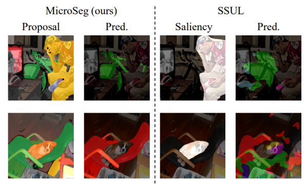
本文的贡献如下：
（1）提出了MicroSeg，通过mask proposals，使得在背景中的概念的分布特征可以被模型更好地感知，有效缓解由背景类的语义转移引起的灾难性遗忘问题。
（2）在两个基准数据集的多个增量场景下取得了最先进的效果，且在增量步骤更多的困难场景下，相对之前工作的性能提升更加明显。
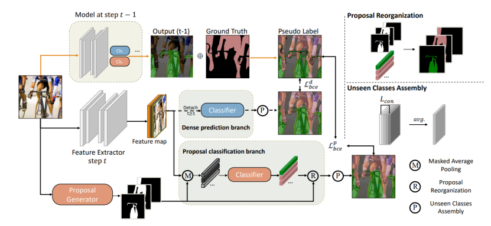
Models： 本文中，语义分割的模型由两部分组成：Feature Extractor和Classifier，特别地，对于第t(t-1)训练阶段，会使用(t-1)训练阶段的模型来对于当前的训练过程进行监督。
Proposal generator： 本文中，通过Mask2Former来生成mask proposals，所有的mask proposals没有交集。
Proposal classification branch： 在这个分支中，Feature Extractor输出的图像特征会和mask proposals进行掩膜平均池化(mask average pooling)操作以获得proposals所对应的原型表示，之后通过Classifier对于这些原型表示进行分类，以得到mask proposals对应的类别标签。接下来，Proposal Reorganization操作将proposal的分类映射回原图像上，并得到语义分割的结果。
Dense prediction branch： 密集分割分支对于Feature Extractor输出的图像特征进行像素级的预测，得到语义分割的结果。该分支仅在t=0时使用，用于保证模型早期训练的效果。
为了有效利用模型在过去学习到的概念，本工作通过上一学习阶段的模型的预测，以及ground truth通过以下规则生成伪标签，在优化过程中为模型提供更加合理的监督信息。通过对于标签的重建，减轻了背景类的语义迁移现象。

直观地，对于ground truth的背景区域中，过去模型判定为前景，且有较大置信度的像素，会在伪标签中被标注为前景；而背景中的其他区域则标注为未见(unseen)类别，通过Micro 机制进行进一步细分和消解。
在Label remodeling中，本文对背景中潜在的各种概念进行表征，并缓解背景类的语义迁移的问题。但即使是未见类别也可能包括若干不同的thing或stuff，因此，本文进一步对其进行消解，将其分为不同部分，其中每个部分都可以视为一个未见概念的特征中心。
以下是本文提出的MicroSeg在两个基准数据集Pascal VOC 2012 和ADE20K上不同增量场景下的实验结果，其中MicroSeg-M是储存了部分样本用于训练的设定，该设定的提出是为了和之前的工作(SSUL-M)进行公平比较。
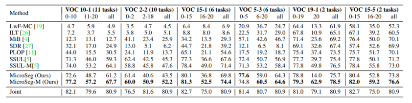
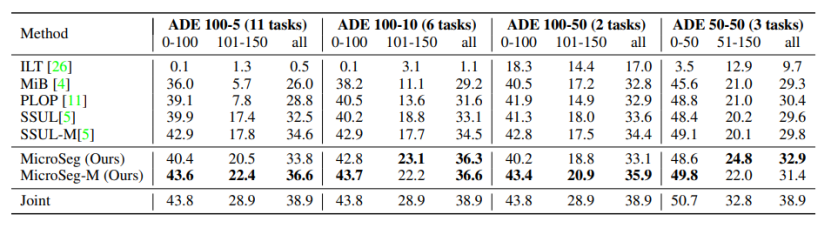
以下是不同增量场景下的实验结果按步骤可视化与之前最先进工作的比较：(a)VOC 15-1(6 steps), (b) VOC 2-2(10 steps)。本文提出的MicroSeg相对之前的方法在相同学习条件下遗忘程度更低，性能更好。
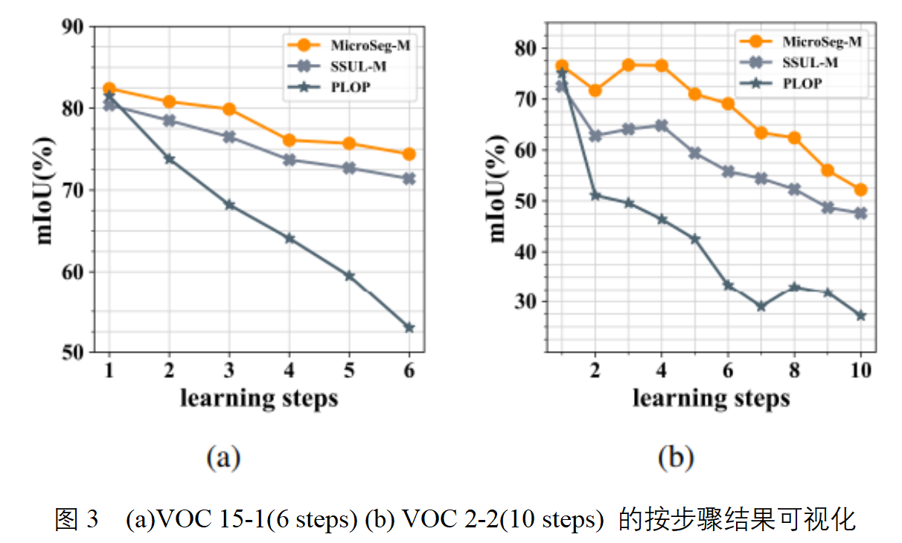
下图是Micro机制的定性分析。从‘cluster’一列中可以看出，在无监督的条件下，通过Micro机制很好地将背景部分分割成了合理的几个区域。这种分割将有助于新知识的学习，以及防止新概念对于旧知识的冲击。
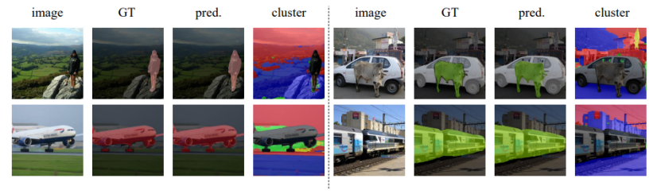
下表是对于几个主要模块DP (dense prediction branch), Proposal (proposal classification branch), Micro (Micro mechanism)的消融实验，能够比较直观地体现每个组成部分带来的性能提升。
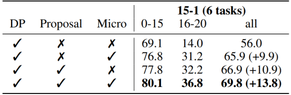
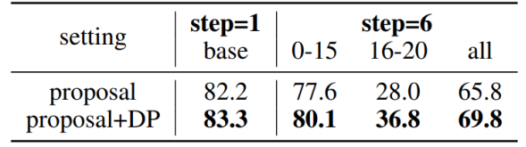
下表是对于超参数(Micro机制的K，标签重建中的阈值τ)的消融实验，可以观察到本问题提出的方法对于超参数的选择并不很敏感。
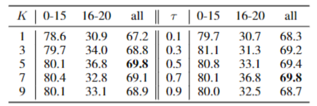